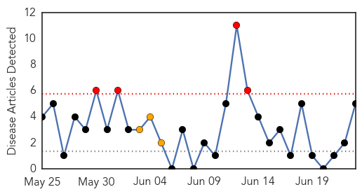
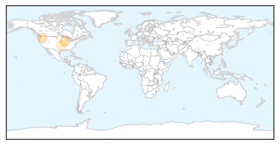
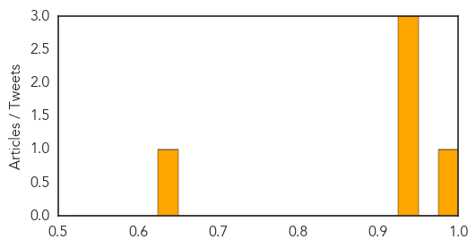

Influenza
30-Day Web Trend
0 alerts, 0 warnings

30-Day Twitter Trend
1 alerts, 0 warnings

Article Locations

Article Confidences

Top Articles:
- 0.984
- Media urged to create awareness on bird flu outbreak
- 0.825
- State precautions against avian flu take birds out of Lebanon Area Fair
- 0.751
- June 22, 2015 Archives
- 0.751
- June 22, 2015 Archives
- 0.751
- June 22, 2015 Archives
- 0.751
- June 22, 2015 Archives
- 0.751
- June 22, 2015 Archives
- 0.596
- Local Farmers Take Precautions Against Avian Flu
- 0.558
- After showing how ORS can treat diarrhoea, he now embarks on surveillance of pneumonia
- 0.536
- Willmar lab playing role as poultry industry looks for answers to avian flu
Top Tweets:
-
No tweets found for Jun 23, 2015
West Nile Virus
30-Day Web Trend
4 alerts, 3 warnings

30-Day Twitter Trend
3 alerts, 0 warnings

Article Locations
Article Confidences
Top Articles:
Top Tweets:
-
No tweets found for Jun 23, 2015